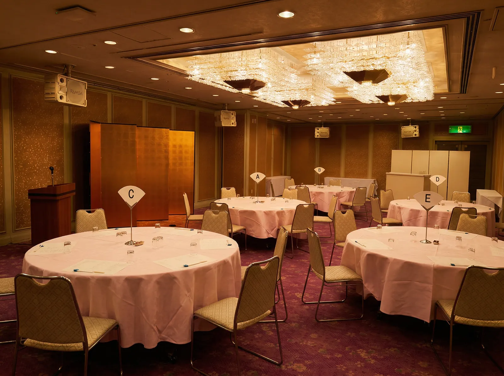
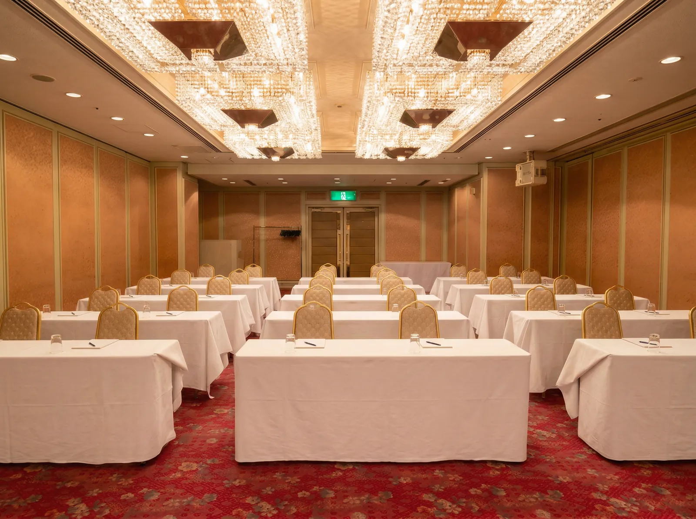
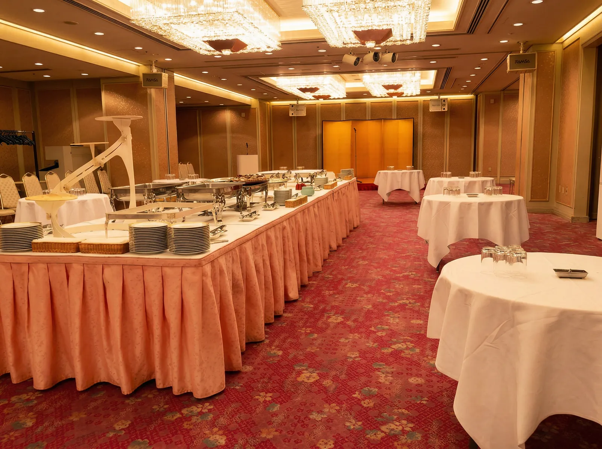
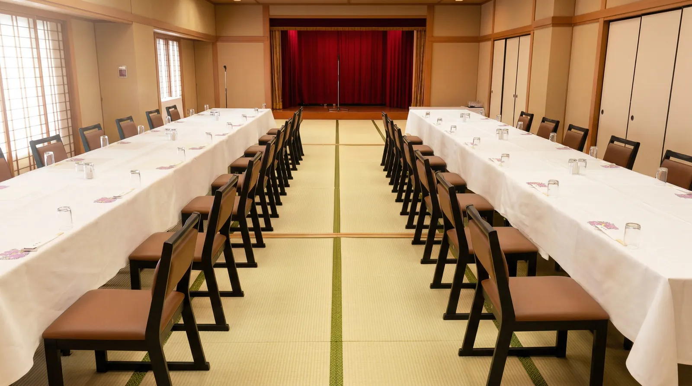

1F
正面玄関
フロント、ブッフェレストラン「モンテ」がございます。
2F
ロビー
ご宴会ご利用のお客様の受付、ロビー等がございます。
2F 洋宴会場




末広の間
3室に分割可能な多目的メインバンケット
会議、セミナー、講演会をはじめ、一般懇親会など催事に合わせて多目的にご利用いただけます。宴会場は3室に分割可能で、音響・映像設備を完備しています。
square_foot東102㎡/中108㎡/西113㎡
groups全室323㎡（96坪）
wifi有線LAN完備
tvプロジェクター・スクリーン
3分割可能
ステージ設置可
architecture2階フロア全体図
_edited.jpg)
西の間
113m²
中の間
108m²
東の間
102m²
height天井高 2.8m
straighten全323m²（96坪）
swap_horiz可動パーティションで3分割可
西の間
- 面積
- 113m²
- スクール
- 最大42名
- コの字
- 最大28名
- ロの字
- 最大48名
中の間
- 面積
- 108m²
- スクール
- 最大28名
- コの字
- 最大24名
- ロの字
- 最大36名
東の間
- 面積
- 102m²
- スクール
- 最大28名
- コの字
- 最大24名
- ロの字
- 最大36名
architecture末広の間 レイアウトパターン
lanインターネット回線のご案内
- ・有線LAN設置：各会場に1か所設置
- ・回線範囲：宴会場のみ「単独回線」 LAN回線数1台分
- ・複数のPCで使用する場合はHUBが必要となります

8F
白雲の間
畳78畳の大広間 最大60名様
畳78畳の大広間です。最大60名様までご利用いただけます。テーブル・椅子席どちらでもご利用いただけます。
square_foot78畳 / 126㎡
groups最大 60名
event_seatお座敷 / 椅子テーブル
health_and_safety高座椅子完備
足腰に優しい「高座椅子」完備
正座が苦手な方や高齢のお客様も安心。畳を傷めない専用設計で、ご利用人数分を無料でご用意いたします。
event_seat
全和室対応・無料
初音の間
畳24畳 少人数向けプライベート和室
窓に面した明るく落ち着いたお部屋です。お祝い事や接待などのお食事会におすすめです。最大12名様までご利用いただけます。
square_foot24畳 / 45㎡
groups最大 12名

8F


会場スペック一覧
| 会場名 | 会議キャパシティ | 宴会キャパシティ | 立食 MAX |
|||
|---|---|---|---|---|---|---|
| スクール | コの字 | ロの字 | 着席(丸テーブル) | 着席ブッフェ | ||
| 末広 東102m² | 28名 | 24名 | 36名 | — | — | 30名 |
| 末広 中108m² | 28名 | 24名 | 36名 | 32名 | 32名 | 40名 |
| 末広 西113m² | 42名 | 28名 | 48名 | 25名 | 40名 | 50名 |
| 中＋東210m² | — | — | — | 40名 | 48名 | 80名 |
| 西＋中221m² | 54名 | 32名 | — | 35名 | 56名 | 70名 |
| 末広 全室323m²(96坪) | 102名 | 56名 | — | 75名 | 120名 | 150名 |
| 白雲の間8F / 78畳 | 99名 | — | 56名 | 60名 | — | — |
| 初音の間8F / 24畳 | — | — | 16名 | 12名 | — | — |
※角テーブルサイズ: 1800×450 / 丸テーブル直径: 1800
verified料理プランご利用特典
会席料理・シッティング・ビュッフェ・弁当宴会をご注文の場合、以下の特典が含まれます。
meeting_room
会場費2時間分
無料
mic
マイク2本まで
無料
podium
演台・司会台
無料
※割子弁当は特典対象外です。会場費・備品は通常料金となります。
最適なレイアウトをご提案します
ご人数や目的に合わせて、スタッフがご案内いたします。